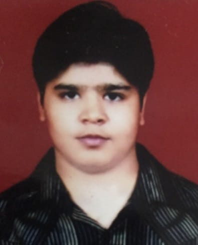

NAVDEEP NAGAR

CAREER SUMMARY:
Solution-oriented and problem solver with 1.8 years of experience in
Artificial Intelligence, testing and maintaining reports fot Chatbots.
Highly skilled in communication, collaboration and technical
documentation.
WORK EXPERIENCE:
Amplify.ai
Customer Support Executive | Dec 2021 - Aug 2023
-
Ensur user satisfaction and retention by providing responsive tech
support.
- Testing Chatbots and giving feedback to the Bot builders team.
-
Increase effieiency by doing Comment moderation manually for bots and
maintaining reports to track engagements and add new features.
-
Collaborate with other developers to update trainings in the active
bots.
Ebix.Inc
Operations Executive | 6 Months
- Responsible for allocation and tracking various trips.
- Coordinated with the vendors for maintaining proper inventory.
Sahasra Electronics Pvt. Ltd.
Intern | 6 Months
-
Electronic manufacturing - Through hole and Surface mount technology.
- Quality control, LED Lighting,PCB manufacturing and designing.
TRAININGS:
NTPC - National Thermal Power Corporation
- Four weeks training from NTPC, Badarpur in fifth semester.
Reliance Communications
-
Four weeks training from Reliance Communications in seventh semester.
EDUCATION:
Maharshi Dayanand University
B.Tech - Electronics and Communication Engineering
12th Board - CBSE (Delhi)
Greenfields Public School, Delhi
10th Board - CBSE (Delhi)
Greenfields Public School, Delhi
SKILLS:
- Strong organisational and time management skills.
- Ability to work independently and as part of a team.
- Detail-oriented and able to handle multiple tasks simultaneously.
OTHER: